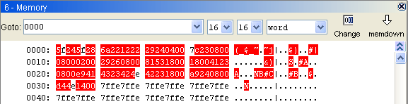

file2mem -s file_name.
SSLLAAAADD...DDCC
The table below describes the function for each part of the data record.
| Name | Num Chars | Description |
SS |
2 | This pair of characters describes the type of record (S0, S1, S2, S3, S5, S7, S8, or S9).
Record S0 is the header, S9 is the footer, and S1-S8 are data records. |
LL |
2 | This pair of characters, interpereted as a hexidecimal value, shows the count of remaining character pairs in the record. |
AAAA |
4, 6, or 8 | Displays the starting address to load the data into memory. The length of the field depends on the number of bytes necessary to hold the address. A 2-byte address uses 4 characters, a 3-byte address uses 6 characters, and a 4-byte address uses 8 characters. |
DD...DD |
0-64 | A string in lengths from 0-64 characters. These characters when paired are interpreted as hexadecimal values and represent the data or descriptive information to load into memory. |
CC |
2 |
This pair of characters displays the two-character checksum value. To calculate the checksum:
|
Shown below is a sample S-record file that could be used to initialize memory values in the debugger.S00600004844521B
S1130000285F245F2212226A000424290008237C2A
S11300100002000800082629001853812341001813
S113002041E900084E42234300182342000824A952
S107003000144ED492
S5030004F8
S9030000FCThe file consists of one S0 record, four S1 records, one S5 record and an S9 record.
The S0 record is comprised as follows:
The first S1 record is comprised as follows:
- S0 S-record type S0, indicating it is a header record.
- 06 Hexadecimal 06 (decimal 6), indicating that six character pairs (or ASCII bytes) follow.
- 00 00 Four character 2-byte address field, zeroes in this example.
- 48 44 52 ASCII H, D, and R - "HDR".
- 1B The checksum.
- S1 S-record type S1, indicating it is a data record to be loaded at a 2-byte address.
- 13 Hexadecimal 13 (decimal 19), indicating that nineteen character pairs, representing a 2 byte address, 16 bytes of binary data, and a 1 byte checksum, follow.
- 00 00 Four character 2-byte address field; hexidecimal address 0x0000, where the data which follows is to be loaded.
- 28 5F 24 5F 22 12 22 6A 00 04 24 29 00 08 23 7C Sixteen character pairs representing the actual binary data.
- 2A The checksum.
The second and third S1 records each contain 0x13 (19) character pairs and are ended with checksums of 13 and 52, respectively. The fourth S1 record contains 07 character pairs and has a checksum of 92.
The S5 record is comprised as follows:
- S5 S-record type S5, indicating it is a count record indicating the number of S1 records
- 03 Hexadecimal 03 (decimal 3), indicating that three character pairs follow.
- 00 04 Hexadecimal 0004 (decimal 4), indicating that there are four data records previous to this record.
- F8 The checksum.
The S9 record is comprised as follows:
- S9 S-record type S9, indicating it is a termination record.
- 03 Hexadecimal 03 (decimal 3), indicating that three character pairs follow.
- 00 00 The address field, hexadecimal 0 (decimal 0) indicating the starting execution address.
- FC The checksum.
The following picture shows the values from the example above as they were loaded into memory in the debugger.
